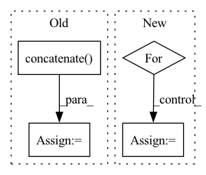

Pattern ID :27725
Before Change
subgroup_labels = list(
ds.map(lambda example: example["subgroup_label"]).batch(
batch_size).as_numpy_iterator())
subgroup_labels = np.concatenate( subgroup_labels) .tolist()
df_a = pd.DataFrame({"example_id": ids, "subgroup_label": subgroup_labels})
bias_table = bias_table[bias_table["example_id"].isin(ids)]
predictions_merge = pd.merge(bias_table, df_a, on=["example_id"])After Change
subgroup_ids = []
num_samples = []
prob_representation = []
for idx in range(num_rounds):
ds = dataloader.train_ds
bias_table = pd.read_csv(
os.path.join(
os.path.join(output_dir, f"round_{idx}"), "bias_table.csv"))
predictions_merge = merge_subgroup_labels(ds, bias_table, batch_size)
for subgroup_id in range(num_subgroups):
prob_i = (predictions_merge["subgroup_label"]
== subgroup_id).sum() / len(predictions_merge)In pattern: SUPERPATTERN
Frequency: 3
Non-data size: 4
Instances Fragment ID: 82202031
Project Name: google/uncertainty-baselines
Commit Name: f5b53459d654b40668528e806a24776b53864278
Time: 2022-11-03
Author: no-reply@google.com
File Name: experimental/shoshin/evaluate_model_lib.py
M Class Name: AnonimousClass
N Class Name: AnonimousClass
M Method Name: evaluate_active_sampling(5)
N Method Name: evaluate_active_sampling(4)
M Parent Class:
N Parent Class:
M File Name: experimental/shoshin/evaluate_model_lib.py
N File Name: experimental/shoshin/evaluate_model_lib.py
M Start Line: 34
M End Line: 59
N Start Line: 68
N End Line: 92
Before Change
os.path.join(output_dir, f"round_{idx}"), "bias_table.csv"))
bias_table["example_id"] = bias_table["example_id"].map(
lambda x: eval(x).decode("UTF-8")) // pylint:disable=eval-used
ids = np.concatenate( list(
ds.map(lambda example: example["example_id"]).batch(
batch_size).as_numpy_iterator())) .tolist()
ids = list(map(lambda x: x.decode("UTF-8"), ids))
subgroup_labels = list(
ds.map(lambda example: example["subgroup_label"]).batch(After Change
subgroup_ids = []
num_samples = []
prob_representation = []
for idx in range(num_rounds):
ds = dataloader.train_ds
bias_table = pd.read_csv(
os.path.join(
os.path.join(output_dir, f"round_{idx}"), "bias_table.csv"))
predictions_merge = merge_subgroup_labels(ds, bias_table, batch_size)
for subgroup_id in range(num_subgroups):
prob_i = (predictions_merge["subgroup_label"]
== subgroup_id).sum() / len(predictions_merge) Fragment ID: 82202028
Project Name: google/uncertainty-baselines
Commit Name: f5b53459d654b40668528e806a24776b53864278
Time: 2022-11-03
Author: no-reply@google.com
File Name: experimental/shoshin/evaluate_model_lib.py
M Class Name: AnonimousClass
N Class Name: AnonimousClass
M Method Name: evaluate_active_sampling(5)
N Method Name: evaluate_active_sampling(4)
M Parent Class:
N Parent Class:
M File Name: experimental/shoshin/evaluate_model_lib.py
N File Name: experimental/shoshin/evaluate_model_lib.py
M Start Line: 34
M End Line: 59
N Start Line: 68
N End Line: 92
Before Change
pl_module.eval()
gt_pcs, pred_pcs = pl_module.sample_assembly(batch) // [num, N, 3]
gt_pcs += 1.5 // offset the GT point cloud to draw in one figure
pcs = np.concatenate( [gt_pcs, pred_pcs], axis=1) // [num, 2N, 3]
log_dict = {
f"pc_{i}": wandb.Object3D(pc)
for i, pc in enumerate(pcs)After Change
pl_module.eval()
gt_pcs, pred_pcs = pl_module.sample_assembly(batch) // [N, 3] list
// offset the GT point clouds to draw in one figure
for i in range(num):
gt_pcs[i][:, 0] = gt_pcs[i][:, 0] + 1.5
log_dict = {
f"pc_{i}": wandb.Object3D(
np.concatenate([gt_pcs[i], pred_pcs[i]], axis=0)) Fragment ID: 82202029
Project Name: wuziyi616/multi_part_assembly
Commit Name: e3ddb99eb0031c4e41ba5c4bdaf64bd2d3fe8a3e
Time: 2022-03-06
Author: dazitu616@gmail.com
File Name: multi_part_assembly/utils/callback.py
M Class Name: PCAssemblyLogCallback
N Class Name: PCAssemblyLogCallback
M Method Name: on_validation_epoch_end(3)
N Method Name: on_validation_epoch_end(3)
M Parent Class: Callback
N Parent Class: Callback
M File Name: multi_part_assembly/utils/callback.py
N File Name: multi_part_assembly/utils/callback.py
M Start Line: 28
M End Line: 32
N Start Line: 23
N End Line: 34
Before Change
if sources is None:
sources = wave
else:
sources = np.concatenate( [sources, wave], axis=0)
segment_IDs.append("{}_{}-{}".format(source_data["utterance-ID"], start, end))
mixture = torch.Tensor(mixture).float()After Change
sources = []
for _source in __sources__:
source, sr = sf.read(sources_data[_source]["path"])
source = source[start_idx: end_idx].mean(axis=1)
print(source.shape)
sources.append(sources)
Fragment ID: 82202024
Project Name: tky823/dnn-based_source_separation
Commit Name: 550c9be6c6db5a89b57716fc49f1c95f913c05ad
Time: 2020-12-29
Author: 40362510+tky823@users.noreply.github.com
File Name: egs/dsd100/common/src/dataset.py
M Class Name: WaveDataset
N Class Name: WaveDataset
M Method Name: __getitem__(2)
N Method Name: __getitem__(2)
M Parent Class: DSD100Dataset
N Parent Class: DSD100Dataset
M File Name: egs/dsd100/common/src/dataset.py
N File Name: egs/dsd100/common/src/dataset.py
M Start Line: 50
M End Line: 74
N Start Line: 33
N End Line: 50